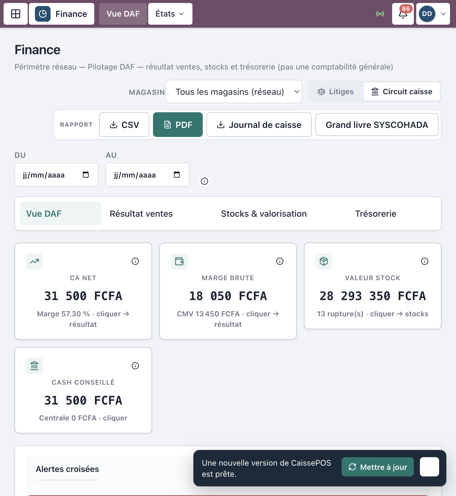
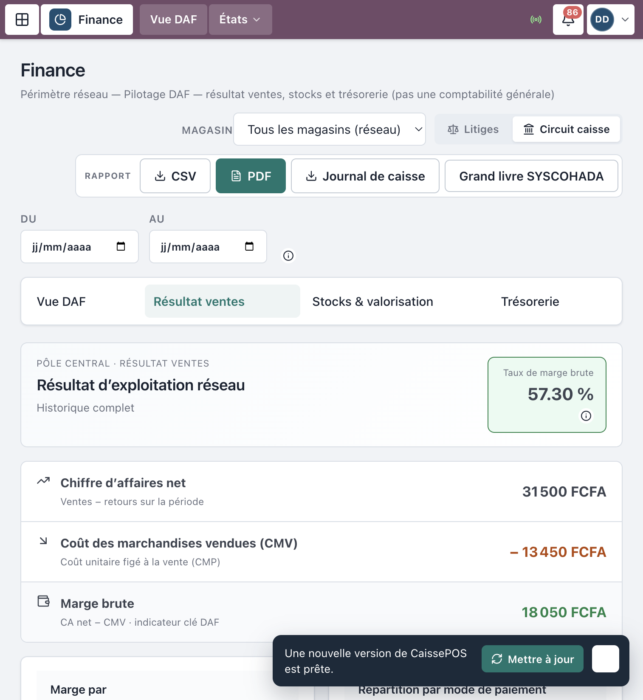
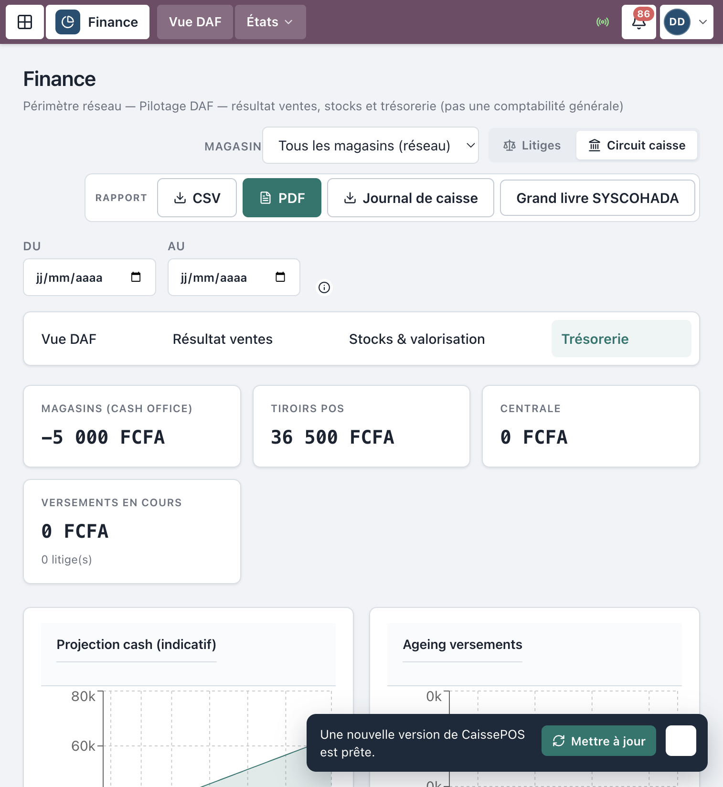
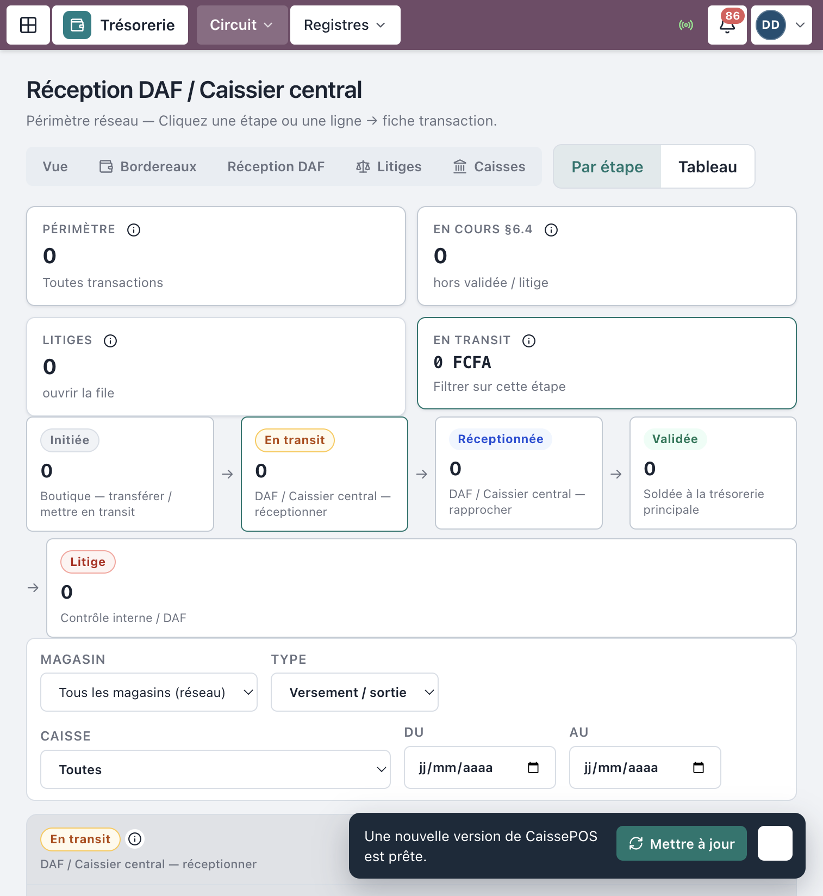
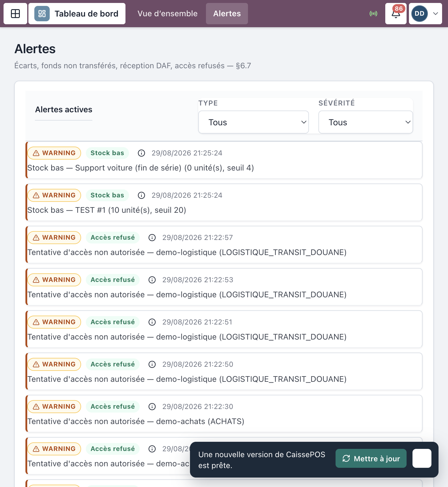

Progiciel Caisses & CRM — MAJOR AUTO PARTS
Public : DAF, Direction générale
(consultation), Caissier central (finance +
trésorerie), Contrôleur interne
Périmètre : cockpit financier, résultat, stocks valorisés, trésorerie
réseau, validation niveau 2, litiges
Captures réelles depuis l’application en production (
crm.majorautoparts.shop, comptedemo-daf). Les libellés correspondent exactement à l’interface.
| Rôle | Accueil typique | Périmètre |
|---|---|---|
| DAF | /finance |
Réseau entier — validation niveau 2 |
| Direction générale | /finance |
Consultation ; seuils exceptionnels |
| Caissier central | Finance / Trésorerie | Réception / rapprochement opérationnel |
| Contrôleur interne | Finance / Litiges / Audit | Lecture + régularisation litiges |
Le DAF ne tient pas la caisse boutique.
Il peut réceptionner / valider les versements magasin →
centrale (comme le Caissier central), et pilote le
cockpit consolidé.
https://crm.majorautoparts.shopdemo-daf en démo).
Figure 1 — Connexion
Route : /finance.
Onglets / sections typiques :
Filtres éventuels : magasin / siège (périmètre).
Exports CSV disponibles selon boutons Exporter / icône téléchargement.

Figure 2 — Cockpit Finance
/ventes/reporting).
Figure 3 — Indicateurs résultat ou stocks
Depuis Finance (onglet trésorerie) ou menu
Trésorerie (/tresorerie) :
Raccourcis : Réception DAF, Litiges, Caisses.

Figure 4 — Trésorerie réseau
Même workflow que le Caissier central (voir aussi le Manuel trésorerie centrale) :
Le DAF intervient aussi pour les seuils / validations de niveau 2 et le pilotage des retards.

Figure 5 — Réception / validation
/alertes) : écarts de
caisse, versements en retard, accès refusés (§6.7)./litiges) :
Régulariser → VALIDÉE avec motif (DAF / Contrôle).
Figure 6 — Alertes ou litiges
Le DAF dispose aussi, selon menu :
| Domaine | Routes utiles |
|---|---|
| Approbation commandes | /achats/commandes, /achats/planning |
| Factures fournisseur | /achats/factures |
| Comptabilité | /finance/comptabilite |
Détail opérationnel Achats : voir le Manuel Stocks & Achats.
| Action | DAF |
|---|---|
| Encaisser en boutique | Non |
| Configurer le SI (zones, users) | Non (Responsable SI) |
| Admin campagnes CRM | Non (Responsable CRM) |
| Réceptionner / valider versements | Oui |
| Piloter résultat / stocks / cash | Oui |
| Symptôme | Que faire |
|---|---|
| Chiffres Finance vides | Vérifier période / filtre magasin-siège |
| Versement bloqué En transit | Traiter Réception DAF |
| Litige ouvert | Régulariser avec motif documenté |
| Export CSV indisponible | Droits rôle / période trop large |
Mot de passe seed : MotDePasse!123
| Identifiant | Rôle |
|---|---|
demo-daf |
DAF |
demo-dg |
Direction générale |
demo-central |
Caissier central |
demo-controle |
Contrôleur interne |
Document couvrant le pilotage DAF (§4, §6.2, §6.4,
reporting).
MAJOR AUTO PARTS · CaissePOS